SEESAW.mws
Dynamic Equations for the SEESAW-E System
©
2012 Quanser Consulting Inc.
URL:
http://www.quanser.com
NOTE: This worksheet presents the general dynamic equations modelling a linear track-and-cart system mounted on top of a seesaw.
Description
-
This worksheet presents the general dynamic equations modelling a seesaw on top of which a linear cart is mounted.
-
Specifically, this worksheet is used to derive the state-space matrices for the Quanser's
Seesaw
experiment.
-
The Lagrange's method is used to obtain the dynamic model of the system.
The
Quanser_Tools
Package
-
The
Quanser_Tools
module defines generic procedures and data in relation to determining the state-space representation of all the Quanser experiments. Specifically, this means deriving and solving the Lagrange's equations of the Quanser systems.
-
The
quanser
repository containing the
Quanser_Tools
package is implemented in the 2 following files:
quanser.ind
and
quanser.lib.
If these two files are not readily available, they can be generated by executing the Maple worksheet titled:
quanser_tools.mws
.
-
To install
the
Quanser_Tools
package, copy the two files
quanser.ind
and
quanser.lib
into a directory of your choice, like for example: "C:\Program Files\Quanser\Maple Repository".
-
To use
the
Quanser_Tools
package in a Maple worksheet, add the path to its disk location to the Maple global variable
libname
. For example, this can be achieved by the following Maple command:
libname :=
"C:/Program Files/Quanser/Maple Repository", libname:
Worksheet Initialization
| > |
restart: interface( imaginaryunit = j ):
|
| > |
libname := "C:/Program Files/Quanser/Maple Repository", ".", libname:
|
environment variable representing the order of series calculations
Notations
Generalized Coordinates:
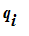
's
The generalized coordinates are also called Lagrangian coordinates.
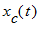
= driving cart (i.e. IP02 or IP01) linear position: the cart zero position is defined at mid-stroke, at the system's quiescent point of operation.
= Seesaw tilt angle about the horizontal: the zero angle [mod
] is defined when the seesaw is in the perfect horizontal position.
| > |
q := [ x[c](t), theta(t) ];
|
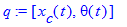
Nq = number of Lagrangian coordinates (e.g. here, it is Nq = 2)
Nq is also the number of position states.
qd = first-order time derivative of the generalized coordinates, e.g. position and angular velocities
| > |
qd := map( diff, q, t );
|
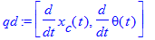
Absolute Cartesian Coordinates of the Centre Of Gravity
conventions:
1)
corresponds to seesaw perfectly horizontal.
2) positive rotation is CCW when facing the cart.
absolute Cartesian coordinates of the Centre Of Gravity (COG) of the seesaw-plus-IP01-or-IP02-track system
| > |
X[sw] := - D[c] * sin( q[2] );
Y[sw] := D[c] * cos( q[2] );
|
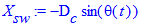
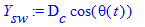
absolute Cartesian coordinates of the IP01 or IP02 linear cart's Centre Of Gravity (COG)
remark: the cart slides on top of the seesaw
| > |
X[c] := - D[T] * sin( q[2] ) + q[1] * cos( q[2] );
Y[c] := D[T] * cos( q[2] ) + q[1] * sin( q[2] );
|
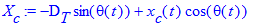
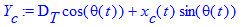
absolute Cartesian velocity coordinates of the IP01 or IP02 linear cart's COG
| > |
Xd[c] := diff( X[c], t );
Yd[c] := diff( Y[c], t );
|
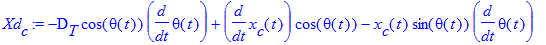
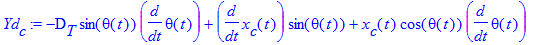
State-Space Variables
-
The chosen states should at least include the generalized coordinates and their first-time derivatives.
-
X is the state vector.
-
In the state vector X: Lagrangian coordinates are first, followed by their first-time derivatives, and finally any other states, as required.
Substitution sets for the states (to obtain time-independent state equations).
| > |
subs_Xq := { seq( q[i] = X[i], i=1..Nq ) };
subs_Xqd := { seq( qd[i] = X[i+Nq], i=1..Nq ) };
|
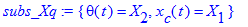
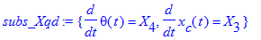
Substitution set for the input(s).
set the input to be the motor voltage:
| > |
#subs_U := { V[m] = U[1] }:
|
set the input to be the cart's driving force:
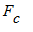
(if not expressed as a function of the motor voltage):
| > |
subs_U := { F[c] = U[1] }:
|
Nu = number of inputs; U = input (row) vector (e.g. U = [ V[m] ] )
substitution set for the position states' second time derivatives
| > |
subs_Xqdd := { seq( diff( q[i], t$2 ) = Xd[i+Nq], i=1..Nq ) };
|
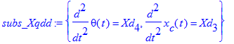
second time derivatives of the position states (written as time-independent variables).
The set of unknowns is obtained from this list to solve the Lagrange's equations of motion.
| > |
Xqdd := [ seq( Xd[i+Nq], i=1..Nq ) ];
|
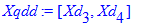
substitution set to linearize the state-space matrices (i.e. A and B)
about the quiescent null state vector (small-displacement theory)
| > |
subs_XUzero := { seq( X[i] = 0, i=1..2*Nq ), seq( U[i] = 0, i=1..Nu ) }:
|
Nx = dim( X ) = total number of states (should be greater than or equal to: 2 * Nq)
Ny = chosen number of outputs
| > |
Nx := 2 * Nq + 0:
Ny := Nq:
|
Total Potential and Kinetic Energies of the System
The total potential and kinetic energies are needed to calculate the Lagrangian of the system.
Total Potential Energy:
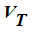
The total potential energy can be expressed in terms of the generalized coordinates alone.
Ve[T] = Total Elastic Potential Energy of the system
IP01 or IP02 cart's gravitational potential energy
| > |
Vg[c] := potential_energy( 'gravity', m[c], g, Y[c] );
|
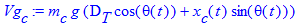
gravitational potential energy of the one-seesaw-plus-one-IP01-or-IP02-track system
| > |
Vg[sw] := potential_energy( 'gravity', m[sw], g, Y[sw] );
|
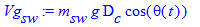
Vg[T] = Total Gravitational Potential Energy of the system
| > |
Vg[T] := Vg[c] + Vg[sw]:
|
V[T] = Total Potential Energy of the system
| > |
V[T] := simplify( Ve[T] + Vg[T] );
|
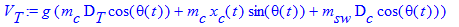
Total Kinetic Energy:
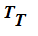
The total kinetic energy can be expressed in terms of the generalized coordinates and their first-time derivatives.
The cart's directions of translation and rotation are orthogonal.
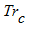
= kinetic energy due to rotation tied to the motorized cart
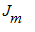
= motor armature inertia;
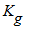
= gear ratio;
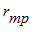
= motor pinion radius
| > |
Tr[c] := kinetic_energy( 'rotation', J[m], omega[m](t) ):
|
| > |
omega[m](t) := K[g] * qd[1] / r[mp]:
|
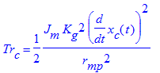
from the IP02 or IP01 parameters:
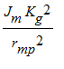
< 0.14 kg <
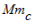
The cart's rotational kinetic energy can be neglected
or if:
| > |
M[rc] = J[m] * K[g]^2 / r[mp]^2:
|
then
| > |
Tr[c] = 1/2 * m[rc] * qd[1]^2:
|
V[c] = IP01 or IP02 Cartesian linear velocity
Euclidian norm (i.e. magnitude) of the absolute Cartesian (linear) velocity of the IP01 or IP02 cart's COG
| > |
V[c] := n_norm( [ Xd[c], Yd[c] ], 2 ):
V[c] := combine( V[c], trig );
|
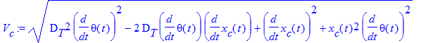
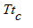
= translational kinetic energy of the motorized cart (e.g. IP02 or IP01)
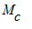
= cart total mass
| > |
Tt[c] := kinetic_energy( 'translation', m[c], V[c] );
|
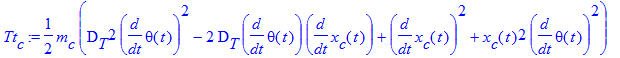
The motion of the one-seesaw-plus-one-IP01-or-IP02-track system consists only of one rotation (no translation).
= seesaw absolute angular velocity
Tr[sw] = seesaw rotational kinetic kinergy
| > |
Tr[sw] := kinetic_energy( 'rotation', J[sw], qd[2] );
|
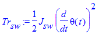
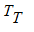
= Total Kinetic Energy of the system
| > |
T[T] := combine( Tr[sw] + Tt[c] + Tr[c], trig ):
|
| > |
T[T] := collect( T[T], diff );
|
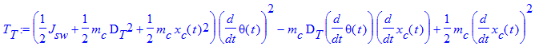
Generalized Forces:
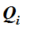
's
The non-conservative forces corresponding to the generalized coordinates are:
![F[c]](images/SEESAW36.gif) and the viscous damping forces, where
and the viscous damping forces, where
![F[c]](images/SEESAW37.gif) = linear force generated by the motorized cart (e.g. IP02, IP01)
= linear force generated by the motorized cart (e.g. IP02, IP01)
Bsw = seesaw viscous friction torque coefficient (a.k.a. viscous damping)
Beq = cart viscous damping force coefficient
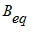
= 0 and
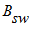
= 0 if both viscous dampings are neglected
Q[i] = generalized force applied on generalized coordinate q[i]
| > |
Q[1] := F[c] - B[eq] * qd[1];
|
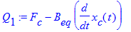
| > |
Q[2] := - B[sw] * qd[2];
|
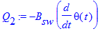
![F[c]](images/SEESAW42.gif) = Linear force produced by the motor at the motor pinion (i.e. after the gearbox): cart driving force
= Linear force produced by the motor at the motor pinion (i.e. after the gearbox): cart driving force
![F[c]](images/SEESAW43.gif) is calculated in the Maple worksheet titled:
IP01_2_Equations.mws
.
is calculated in the Maple worksheet titled:
IP01_2_Equations.mws
.
rm: comment the following line out if U = F[c], uncomment it if U = V[m]
| > |
#F[c] := eta[g] * K[g] * eta[m] * K[t] * ( V[m] * r[mp] - K[g] * K[m] * qd[1] ) / R[m] / r[mp]^2;
|
| > |
Q := [ seq( Q[i], i=1..Nq ) ];
|
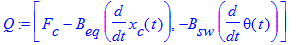
Euler-Lagrange's Equations
For a
N
-DOF system, the Lagrange's equations can be written:
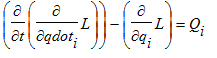
for
through
where:
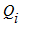
's are special combinations of external forces and called the
generalized forces,
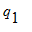
, ...,
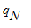
, are
N
independent coordinates chosen to describe the system and called the
generalized coordinates
,
and
is the
Lagrangian
of the system.
is defined by:
where
is the total kinetic energy of the system and
the total potential energy of the system.
| > |
EOM_orig := lagrange_equations( T[T], V[T], q, Q ):
|
this is to display the EOM's
| > |
EOM_orig := collect( EOM_orig, { seq( diff( q[i], t$2 ), i=1..Nq ), seq( diff( q[i], t ), i=1..Nq ), seq( q[i], i=1..Nq ) } );
|
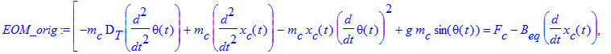
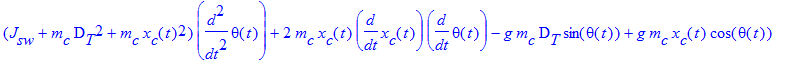
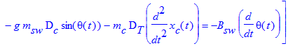
Express the Euler-Lagrange equations of motion as functions of the states:
1) substitute (i.e. name) the acceleration states first!
2) then substitute the velocity states!
3) and only after, the position states, and the inputs!
| > |
EOM_states := subs( subs_Xqd, subs( subs_Xqdd, EOM_orig ) ):
|
| > |
EOM_states := subs( subs_Xq, subs_U, EOM_states );
|
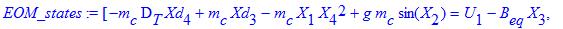
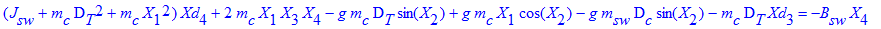
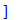
Linearization in the EOM's
of the Trigonometric Functions
Linearization of the equations of motion around the quiescent point of operation.
Here, linearization around the zero theta angle, i.e. for small-amplitude seesaw oscillations.
Linearization around: theta0 = 0, and theta_dot0 = 0
Generalized series expansions of the trigonometric functions is used (for small angles).
| > |
for i from 1 to Nq do
EOM_ser[i] := subsop( 1 = convert( series( op( 1, EOM_ser[i] ), X[2] ), polynom ), EOM_ser[i] );
EOM_ser[i] := simplify( EOM_ser[i] );
end do:
|
Additional Insight: Inertia (or mass) Matrix: Fi
The nonlinear system of equations resulting from the Lagrangian mechanics can be written in the following matrix form:
F( q ) . qdd + G( q, qd ) . qd + H( q ) . q = L( q, qd, u )
F, G, and H are called, respectively, the mass, damping, and stiffness matrices.
They are symmetric in form.
The inertia (a.k.a. mass) matrix, F, gives indications regarding the coupling existing in the system.
| > |
Fi := Matrix( Nq, Nq ):
|
| > |
for i from 1 to Nq do
for k from 1 to Nq do
Fi[ i, k ] := simplify( diff( op( 1, EOM_states[i] ), Xd[k+Nq] ) );
Fi[ i, k ] := collect( combine( Fi[ i, k ], trig ), cos );
end do;
end do:
|
Linearization of the inertia matrix for small-displacements
| > |
Fi_lin := Matrix( Nq, Nq ):
|
| > |
for i from 1 to Nq do
for k from 1 to Nq do
Fi_lin[ i, k ] := Fi[ i, k ];
Fi_lin[ i, k ] := convert( series( Fi_lin[ i, k ], X[ 2 ] ), polynom );
Fi_lin[ i, k ] := subs( subs_XUzero, Fi_lin[ i, k ] );
end do;
end do:
|
Solving the Euler-Lagrange's Equations
Reverse State Substitution for Pretty Display of the Solved EOM's
only for pretty print
| > |
subs_Xq_rev := { seq( X[i] = q[i], i=1..Nq ) }:
subs_Xqd_rev := { seq( X[i+Nq] = qd[i], i=1..Nq ) }:
|
| > |
#subs_U_rev := { U[1] = V[m] }:
subs_U_rev := { U[1] = F[c] }:
|
| > |
eom_collect_list := { seq( diff( q[i], t ), i=1..Nq ), seq( q[i], i=1..Nq ), J[sw] };
|
Solution to the Non-Linear Equations of Motion
Solve the non-linear form of the equations of motion for the states' second time derivatives
| > |
Xqdd_solset_nl := solve( convert( EOM_states, set ), convert( Xqdd, set ) ):
|
| > |
assign( Xqdd_solset_nl );
|
| > |
Xd_nl[3] := simplify( Xd[3] ):
Xd_nl[4] := simplify( Xd[4] ):
unassign( 'Xd[3]', 'Xd[4]' ):
|
pretty display w.r.t. the named system states
| > |
Xd_nl[3] := simplify( subs( subs_U_rev, subs_Xq_rev, subs_Xqd_rev, Xd_nl[3] ) ):
diff( qd[1], t ) = collect( Xd_nl[3], eom_collect_list );
|
| > |
Xd_nl[4] := simplify( subs( subs_U_rev, subs_Xq_rev, subs_Xqd_rev, Xd_nl[4] ) ):
diff( qd[2], t ) = collect( Xd_nl[4], eom_collect_list );
|
Solution to the Linearized EOM's
Solve the linear form of the equations of motion for the states' second time derivatives
| > |
Xqdd_solset_ser := solve( convert( EOM_ser, set ), convert( Xqdd, set ) );
|
| > |
assign( Xqdd_solset_ser );
|
Moreover, for small angles and small displacements
| > |
Xd[3] := subs( X[1]^2 = 0, X[4]^2 = 0, Xd[3] ):
Xd[3] := algsubs( X[3]*X[4] = 0, Xd[3] );
|
| > |
Xd[4] := subs( X[1]^2 = 0, X[4]^2 = 0, Xd[4] ):
Xd[4] := algsubs( X[3]*X[4] = 0, Xd[4] );
|
pretty display w.r.t. the named system states
| > |
diff( qd[1], t ) = collect( subs( subs_U_rev, subs_Xq_rev, subs_Xqd_rev, Xd[3] ), eom_collect_list );
|
| > |
diff( qd[2], t ) = collect( subs( subs_U_rev, subs_Xq_rev, subs_Xqd_rev, Xd[4] ), eom_collect_list );
|
Determine the System State-Space Matrices: A, B, C, and D
| > |
A_ss := Matrix( Nx, Nx ):
|
| > |
A_ss := deriveA( Xqdd, A_ss, Nq, subs_XUzero ): 'A' = A_ss;
|
| > |
B_ss := Matrix( Nx, Nu ):
|
| > |
B_ss := deriveB( Xqdd, B_ss, Nq, subs_XUzero ): 'B' = B_ss;
|
| > |
C_ss := IdentityMatrix( Nx, Nx );
|
| > |
D_ss := Matrix( Nx, Nu, 0 );
|
Write A, B, C, and D to a Matlab file
Save the state-space matrices A, B, C and D to a MATLAB file.
| > |
Matlab_File_Name := "SEESAW_ABCD_eqns.m":
|
unassign variables, when necessary, for those present in the "Matlab_Notations" substitution set
| > |
if assigned( B[eq] ) then
unassign( 'B[eq]' );
end if;
|
| > |
if assigned( B[sw] ) then
unassign( 'B[sw]' );
end if;
|
substitution set containing a notation consistent with that used in the MATLAB design script(s)
| > |
Matlab_Notations := { m[c] = mc, m[sw] = msw, J[sw] = Jsw, D[T] = Dt, D[c] = Dc, B[sw] = Bsw, J[m] = Jm, B[eq] = Beq, K[g] = Kg, K[t] = Kt, K[m] = Km, R[m] = Rm, r[mp] = r_mp, eta[g] = eta_g, eta[m] = eta_m }:
|
| > |
Experiment_Name := "Seesaw":
|
| > |
write_ABCD_to_Mfile( Matlab_File_Name, Experiment_Name, Matlab_Notations, A_ss, B_ss, C_ss, D_ss );
|
Procedure Printing
default:
| > |
#interface( verboseproc = 1 );
|
| > |
eval( lagrange_equations ):
|
Formula to Estimate J[sw] from the "inverted" seesaw free oscillations
period of oscillation of a compound pendulum (free swing)
| > |
EQN := T[osc] = 2 * pi * sqrt( J[pivot] / (m[sw] * g * D[c] ) );
|
parallel-axis theorem
| > |
J[pivot] := J[sw] + m[sw] * D[c]^2;
|
estimation of J[sw]
| > |
J[sw] = solve( EQN, J[sw] );
|
Click here to go back to top: Description Section.